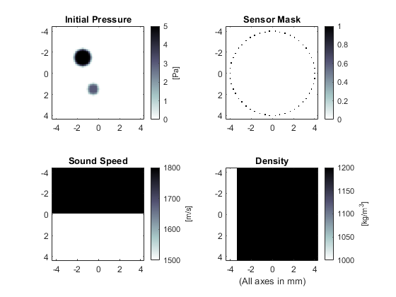
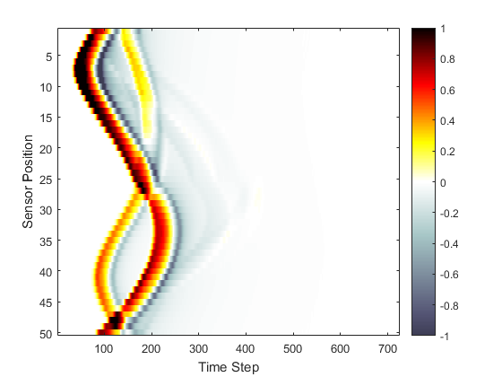

Heterogeneous Propagation Medium Example
This example provides a simple demonstration of using k-Wave for the simulation and detection of the pressure field generated by an initial pressure distribution within a two-dimensional heterogeneous propagation medium. It builds on the Homogeneous Propagation Medium Example.
Contents
Defining a heterogeneous medium
For a homogeneous propagation medium, the sound speed is specified as a single scalar value in SI units. If the propagation medium is heterogeneous, medium.sound_speed and medium.density are instead given as matrices with the same dimensions as the computational grid (i.e., with Nx rows and Ny columns). These matrices can be created in several fashions, including explicitly (as given below), from external image maps, or using spatial or volume data from other simulations or experimental imaging modalities.
% define the properties of the propagation medium medium.sound_speed = 1500 * ones(Nx, Ny); % [m/s] medium.sound_speed(1:Nx/2, :) = 1800; % [m/s] medium.density = 1000 * ones(Nx, Ny); % [kg/m^3] medium.density(:, Ny/4:Ny) = 1200; % [kg/m^3]
Running the simulation
The computation is again invoked by calling kspaceFirstOrder2D with the inputs defined above. Rather than manually producing a plot of the initial pressure distribution, sensor mask, and medium properties, it is also possible to use the inbuilt plotting functionality of kspaceFirstOrder2D by setting the optional input 'PlotLayout' to true. This produces a plot of the simulation inputs as shown below. Optional inputs for k-Wave functions are given after the main inputs as 'string', value pairs. The 'string' identifies the optional input parameter that is being modified, and the value is the user setting for this parameter. To remove the PML from the display, the optional input 'PlotPML' is also set to false.
% run the simulation with optional inputs for plotting the simulation
% layout in addition to removing the PML from the display
sensor_data = kspaceFirstOrder2D(kgrid, medium, source, sensor, ...
'PlotLayout', true, 'PlotPML', false);

A plot of the recorded time series is given below. The shape of the main wave-front has been perturbed compared to the homogeneous example, and weak reflections from the heterogeneous interfaces can also be seen.
